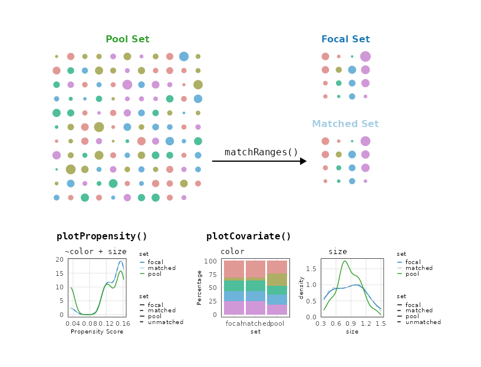
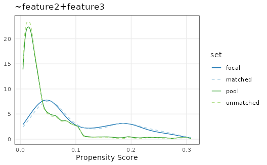
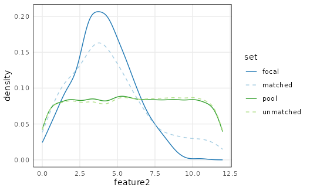
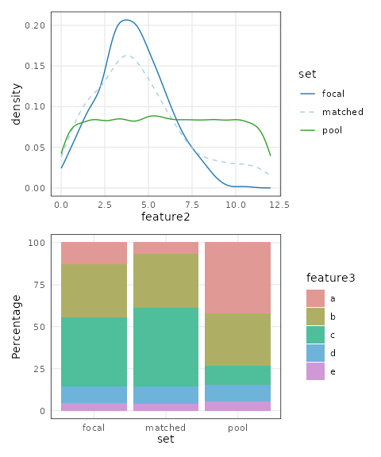
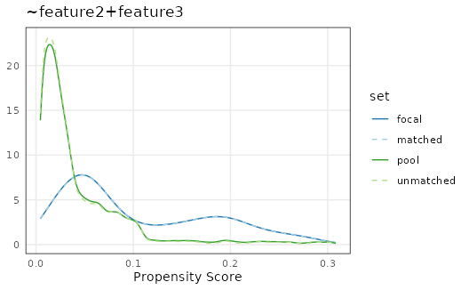
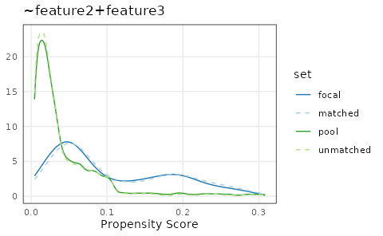
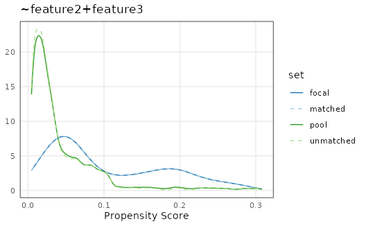

Overview of matchRanges
Eric S. Davis
09/23/2021
matching_ranges.RmdIntroduction
When performing statistical analysis on any set of genomic ranges it is often important to compare focal sets to null sets that are carefully matched for possible covariates that may influence the analysis. To address this need, the nullranges package implements matchRanges(), an efficient and convenient tool for selecting a covariate-matched set of null hypothesis ranges from a pool of background ranges within the Bioconductor framework.
In this vignette, we provide an overview of matchRanges() and its associated functions. We start with a simulated example generated with the utility function makeExampleMatchedDataSet(). We also provide an overview of the class struture and a guide for choosing among the supported matching methods. To see matchedRanges() used in real biological examples, visit the Case study I: CTCF occupancy, and Case study II: CTCF orientation vignettes.

Using matchRanges()
We will use a simulated data set to demonstrate matching across covarying features:
library(nullranges)
set.seed(123)
x <- makeExampleMatchedDataSet(type = 'GRanges')
x## GRanges object with 10500 ranges and 3 metadata columns:
## seqnames ranges strand | feature1 feature2 feature3
## <Rle> <IRanges> <Rle> | <logical> <numeric> <character>
## [1] chr1 1-100 * | TRUE 2.87905 c
## [2] chr1 2-101 * | TRUE 3.53965 c
## [3] chr1 3-102 * | TRUE 7.11742 c
## [4] chr1 4-103 * | TRUE 4.14102 a
## [5] chr1 5-104 * | TRUE 4.25858 c
## ... ... ... ... . ... ... ...
## [10496] chr1 10496-10595 * | FALSE 1.23578 b
## [10497] chr1 10497-10596 * | FALSE 1.69671 a
## [10498] chr1 10498-10597 * | FALSE 6.11140 a
## [10499] chr1 10499-10598 * | FALSE 2.21657 d
## [10500] chr1 10500-10599 * | FALSE 5.33003 b
## -------
## seqinfo: 1 sequence from an unspecified genome; no seqlengthsOur simulated dataset has 3 features: logical feature1, numeric feature2, and character/factor feature3. We can use matchRanges() to compare ranges where feature1 is TRUE to ranges where feature1 is FALSE, matched by feature2 and/or feature3:
set.seed(123)
mgr <- matchRanges(focal = x[x$feature1],
pool = x[!x$feature1],
covar = ~feature2 + feature3)
mgr## MatchedGRanges object with 500 ranges and 3 metadata columns:
## seqnames ranges strand | feature1 feature2 feature3
## <Rle> <IRanges> <Rle> | <logical> <numeric> <character>
## [1] chr1 4373-4472 * | FALSE 8.959578 d
## [2] chr1 9740-9839 * | FALSE 0.959336 e
## [3] chr1 7755-7854 * | FALSE 2.107003 c
## [4] chr1 8266-8365 * | FALSE 6.231860 d
## [5] chr1 4298-4397 * | FALSE 6.955316 c
## ... ... ... ... . ... ... ...
## [496] chr1 2443-2542 * | FALSE 1.12276 b
## [497] chr1 2455-2554 * | FALSE 3.38518 c
## [498] chr1 1285-1384 * | FALSE 1.58546 c
## [499] chr1 10137-10236 * | FALSE 9.39272 c
## [500] chr1 6119-6218 * | FALSE 10.22412 c
## -------
## seqinfo: 1 sequence from an unspecified genome; no seqlengthsThe resulting MatchedGRanges object is a set of null hypothesis ranges selected from our pool of options that is the same length as our input focal ranges and matched for covar features 2 and 3. These matched ranges print and behave just as normal GRanges would:
library(GenomicRanges)
sort(mgr)## MatchedGRanges object with 500 ranges and 3 metadata columns:
## seqnames ranges strand | feature1 feature2 feature3
## <Rle> <IRanges> <Rle> | <logical> <numeric> <character>
## [1] chr1 511-610 * | FALSE 5.545186 c
## [2] chr1 513-612 * | FALSE 2.221684 b
## [3] chr1 534-633 * | FALSE 1.563458 b
## [4] chr1 565-664 * | FALSE 0.932659 c
## [5] chr1 577-676 * | FALSE 3.256908 c
## ... ... ... ... . ... ... ...
## [496] chr1 10377-10476 * | FALSE 0.795032 c
## [497] chr1 10380-10479 * | FALSE 0.977984 b
## [498] chr1 10409-10508 * | FALSE 3.662119 c
## [499] chr1 10455-10554 * | FALSE 6.815473 c
## [500] chr1 10483-10582 * | FALSE 3.724147 c
## -------
## seqinfo: 1 sequence from an unspecified genome; no seqlengthsWe can change the type argument of makeExampleMatchedDataSet to input data.frames, data.tables, DataFrames, GRanges and GInteractions objects - all of which work as inputs for matchRanges. These produce either MatchedDataFrame, MatchedGRanges, or MatchedGInteractions objects. For more information about the Matched class structure and available methods, see the Class structure section below or the help documentation for each class, ?MatchedDataFrame, ?MatchedGRanges, or ?MatchedGInteractions.
Assessing quality of matching
We can assess the quality of Matched classes with overview(), plotCovariate(), and plotPropensity(). overview() provides a quick assessment of overall matching quality by reporting the mean and standard deviation for covariates and propensity scores of the focal, pool, matched, and unmatched sets. It also reports the mean difference in focal-matched sets:
overview(mgr)## MatchedGRanges object:
## set N feature2.mean feature2.sd feature3.a feature3.b feature3.c
## focal 500 4.1 1.9 66 157 206
## matched 500 4.5 2.7 34 160 234
## pool 10000 6.0 3.4 4248 3121 1117
## unmatched 9500 6.1 3.5 4214 2961 883
## feature3.d feature3.e ps.mean ps.sd
## 49 22 0.100 0.076
## 53 19 0.110 0.078
## 992 522 0.045 0.051
## 939 503 0.041 0.047
## --------
## focal - matched:
## feature2.mean feature2.sd feature3.a feature3.b feature3.c feature3.d
## -0.42 -0.84 32 -3 -28 -4
## feature3.e ps.mean ps.sd
## 3 -0.0057 -0.0019Visualizing propensity scores can show how well sets were matched overall:
plotPropensity(mgr)
The distributions of features can be visualized in each set with plotCovariate():
plotCovariate(mgr)
Since these functions return ggplots, patchwork can be used to visualize all covariates like this:
library(patchwork)
plots <- lapply(covariates(mgr), plotCovariate, x=mgr, sets = c('f', 'm', 'p'))
Reduce('/', plots)
By default, continuous features are plotted as density line plots while categorical features are plotted as stacked bar plots. All sets are also shown by default. Defaults can be overridden by setting the type and sets arguments.
Accessing matched data
Custom plots can be made by extracting data from the Matched object:
matchedData(mgr)## id feature2 feature3 ps set
## 1: 1 2.879049 c 0.21095908 focal
## 2: 1 3.539645 c 0.19210984 focal
## 3: 1 7.117417 c 0.11193396 focal
## 4: 1 4.141017 a 0.01771986 focal
## 5: 1 4.258575 c 0.17308581 focal
## ---
## 20496: 0 1.235781 b 0.08945367 unmatched
## 20497: 0 1.696712 a 0.02707977 unmatched
## 20498: 0 6.111404 a 0.01255772 unmatched
## 20499: 0 2.216575 d 0.07578989 unmatched
## 20500: 0 5.330029 b 0.04535856 unmatchedAttributes of the Matched object can be extracted with the following accessor functions:
covariates(mgr)
method(mgr)
withReplacement(mgr)## [1] "feature2" "feature3"
## [1] "rejection"
## [1] FALSEEach set can also be extracted with the following accessor functions:
## [1] "GRanges object with 500 ranges and 3 metadata columns"
## [1] "GRanges object with 10000 ranges and 3 metadata columns"
## [1] "GRanges object with 500 ranges and 3 metadata columns"
## [1] "GRanges object with 9500 ranges and 3 metadata columns"The indices() function can be used to find the original indices for each set. For example, indices(x, set="matched") will supply the indices from the pool set that corresponds to the matched set. In fact, matched(x) is a convenient wrapper around pool(x)[indices(x, set='matched'):
## [1] TRUE
Choosing the method parameter
There are currently 3 available methods for selecting a matched set:
Nearest-neighbor matching with replacement
Rejection sampling with/without replacement
Stratified sampling with/without replacement
Currently, nearest-neighbor matching without replacement is not implemented, but stratified sampling without replacement is a suitable substitute.
Nearest-neighbor matching
Attempts to find the nearest neighbor for each range by using a rolling-join (as implemented in the data.table package) between focal and pool propensity scores.
set.seed(123)
mgr <- matchRanges(focal = x[x$feature1],
pool = x[!x$feature1],
covar = ~feature2 + feature3,
method = 'nearest',
replace = TRUE)
nn <- overview(mgr)
plotPropensity(mgr)
This method is best if you have a very large dataset because it is usually the fastest matching method. However, because sampling is done with replacement the user should be careful to assess the number of duplicate ranges pulled. This can be done using the indices() function:
## Total number of duplicated indices
length(which(duplicated(indices(mgr))))
sum(table(indices(mgr)) > 1) # used more than once
sum(table(indices(mgr)) > 2) # used more than twice
sum(table(indices(mgr)) > 3) # used more than thrice## [1] 59
## [1] 51
## [1] 8
## [1] 0Rejection sampling
Uses a probability-based approach to select options in the pool that distributionally match the focal set based on propensity scores. If method or replace is not supplied, the default values are rejection sampling without replacement.
set.seed(123)
mgr <- matchRanges(focal = x[x$feature1],
pool = x[!x$feature1],
covar = ~feature2 + feature3,
method = 'rejection',
replace = FALSE)
rs <- overview(mgr)
plotPropensity(mgr)
Rejection sampling is typically the fastest available matching method. Therefore, it is ideal to use on large datasets when sampling without replacement is important. However, this method can be unstable, particularly when the pool set is not much larger than the focal set. In those cases, the best method to use is stratified sampling.
Stratified sampling
Performs iterative sampling on increasingly large bins of data. focal and pool propensity scores are binned by their value with high granularity, options are randomly selected (with or without replacement) within each bin and subsequently removed from the pool of available options. This procedure is repeated, decreasing the number of bins (and increasing bin size) until the number of selected matches is equal to the focal set.
set.seed(123)
mgr <- matchRanges(focal = x[x$feature1],
pool = x[!x$feature1],
covar = ~feature2 + feature3,
method = 'stratified',
replace = FALSE)
ss <- overview(mgr)
plotPropensity(mgr)
For very large data sets, users might notice a slight increase in run time compared to the other methods. Stratified sampling tends to work very well for discrete data, and often produces the best matches even on continuous data:
## Extract difference in propensity scores
## between focal and matched sets
fmps <- sapply(c(nn, rs, ss), `[[`, "quality")
c('nearest', 'rejection', 'stratified')[which.min(fmps)]## [1] "stratified"Class structure
Since matchRanges() automatically constructs the relevant classes, this section is not essential for using any of the nullranges package functionality. Instead, this section serves as a guide for developers who wish to extend these classes or those more interested in S4 implementation details.
Implementation details
matchRanges() acts as a constructor, combining a Matched superclass - which contains the matching results - with either a DataFrame(data.frame/data.table), GRanges, or GInteractions superclass. This results in the MatchedDataFrame, MatchedGRanges, or MatchedGInteractions subclasses.

Internally, each Matched subclass uses a “delegate” object of the same type to assign its slots. The delegate object used is the matched set. Therefore, the resulting Matched* object behaves as a combination of both its superclasses - with access to methods from both.
For example, using matchRanges() on GRanges objects assigns a GRanges delegate object which is used to populate GRanges-specific slots. This results in a MatchedGRanges object, with access to both Matched functions (e.g. plotCovariate) as well as normal GRanges methods (e.g.s seqnames, resize, etc…).
Session information
## R version 4.1.0 (2021-05-18)
## Platform: x86_64-pc-linux-gnu (64-bit)
## Running under: Ubuntu 20.04.2 LTS
##
## Matrix products: default
## BLAS/LAPACK: /usr/lib/x86_64-linux-gnu/openblas-pthread/libopenblasp-r0.3.8.so
##
## locale:
## [1] LC_CTYPE=en_US.UTF-8 LC_NUMERIC=C
## [3] LC_TIME=en_US.UTF-8 LC_COLLATE=en_US.UTF-8
## [5] LC_MONETARY=en_US.UTF-8 LC_MESSAGES=C
## [7] LC_PAPER=en_US.UTF-8 LC_NAME=C
## [9] LC_ADDRESS=C LC_TELEPHONE=C
## [11] LC_MEASUREMENT=en_US.UTF-8 LC_IDENTIFICATION=C
##
## attached base packages:
## [1] parallel stats4 grid stats graphics grDevices utils
## [8] datasets methods base
##
## other attached packages:
## [1] patchwork_1.1.1 GenomicRanges_1.44.0 GenomeInfoDb_1.28.4
## [4] IRanges_2.26.0 S4Vectors_0.30.0 BiocGenerics_0.38.0
## [7] ggplot2_3.3.5 plotgardener_0.99.11 nullranges_0.0.26
##
## loaded via a namespace (and not attached):
## [1] bitops_1.0-7 matrixStats_0.61.0
## [3] fs_1.5.0 progress_1.2.2
## [5] RColorBrewer_1.1-2 rprojroot_2.0.2
## [7] InteractionSet_1.20.0 tools_4.1.0
## [9] bslib_0.3.0 utf8_1.2.2
## [11] R6_2.5.1 KernSmooth_2.23-20
## [13] DBI_1.1.1 colorspace_2.0-2
## [15] withr_2.4.2 prettyunits_1.1.1
## [17] tidyselect_1.1.1 curl_4.3.2
## [19] compiler_4.1.0 textshaping_0.3.5
## [21] Biobase_2.52.0 desc_1.3.0
## [23] DelayedArray_0.18.0 labeling_0.4.2
## [25] rtracklayer_1.52.1 sass_0.4.0
## [27] scales_1.1.1 mvtnorm_1.1-2
## [29] ggridges_0.5.3 pkgdown_1.6.1
## [31] speedglm_0.3-3 yulab.utils_0.0.2
## [33] systemfonts_1.0.2 stringr_1.4.0
## [35] digest_0.6.27 Rsamtools_2.8.0
## [37] rmarkdown_2.11 XVector_0.32.0
## [39] pkgconfig_2.0.3 htmltools_0.5.2
## [41] MatrixGenerics_1.4.3 highr_0.9
## [43] fastmap_1.1.0 rlang_0.4.11
## [45] farver_2.1.0 gridGraphics_0.5-1
## [47] jquerylib_0.1.4 BiocIO_1.2.0
## [49] generics_0.1.0 jsonlite_1.7.2
## [51] mclust_5.4.7 BiocParallel_1.26.2
## [53] dplyr_1.0.7 RCurl_1.98-1.5
## [55] magrittr_2.0.1 ggplotify_0.1.0
## [57] GenomeInfoDbData_1.2.6 Matrix_1.3-4
## [59] Rcpp_1.0.7 munsell_0.5.0
## [61] fansi_0.5.0 lifecycle_1.0.0
## [63] stringi_1.7.4 yaml_2.2.1
## [65] MASS_7.3-54 SummarizedExperiment_1.22.0
## [67] zlibbioc_1.38.0 plyr_1.8.6
## [69] crayon_1.4.1 lattice_0.20-45
## [71] Biostrings_2.60.2 hms_1.1.0
## [73] knitr_1.34 pillar_1.6.2
## [75] rjson_0.2.20 strawr_0.0.9
## [77] XML_3.99-0.8 glue_1.4.2
## [79] evaluate_0.14 data.table_1.14.0
## [81] vctrs_0.3.8 gtable_0.3.0
## [83] purrr_0.3.4 assertthat_0.2.1
## [85] ks_1.13.2 cachem_1.0.6
## [87] xfun_0.26 restfulr_0.0.13
## [89] pracma_2.3.3 ragg_1.1.3
## [91] tibble_3.1.4 GenomicAlignments_1.28.0
## [93] plyranges_1.12.1 memoise_2.0.0
## [95] ellipsis_0.3.2